5040C24 air conditioner box - dismantle and rebuild at bench
- Path
- Procedures > 50 AUXILIARY UNITS > 5040 AIR CONDITIONING CASING AND COMPONENTS > 5040C air conditioner box and components > 5040C24 air conditioner box - dismantle and rebuild at bench
- Kind
- repair procedure (removal / refitting; the operation number is the code)
- Applies to
- all engines; all production periods
- Interactive page
- https://sloeber94.github.io/elrnDB-fPnd/en/#/2752891
Applies to: all engines; all production periods
 Removing
Removing
 Refitting
Refitting1. Undo the retaining bolts.
2. Remove the air intake and recirculation flap motor.
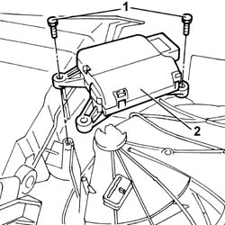
Applies to: all engines; all production periods
1. Undo the retaining bolts.
2. Remove the motor controlling the air mixing flap.
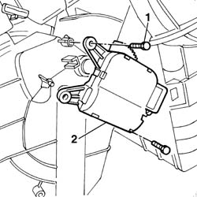
Applies to: all engines; all production periods
1. Undo the retaining bolts.
2. Remove the air distribution flaps control motor.
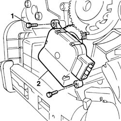
Applies to: all engines; all production periods
1. Remove the upper mixed air sensor.
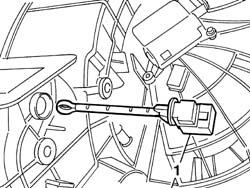
Applies to: all engines; all production periods
1. Remove the lower mixed air sensor.
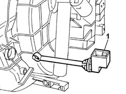
Applies to: all engines; all production periods
1. Undo the retaining bolt.
2. Remove the distribution flaps control sprocket.
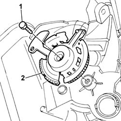
Applies to: all engines; all production periods
1. Undo the retaining bolt.
2. Release the clip.
3. Rotate in a clockwise direction and remove the air conditioner fan motor.
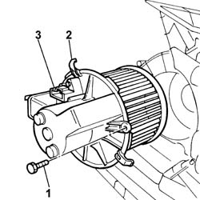
Applies to: all engines; all production periods
1. Undo the retaining bolts.
2. Remove the expansion valve.
3. Remove the soundproofing trim.
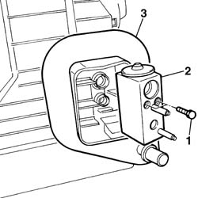
Applies to: all engines; all production periods
1. Undo the fixing bolts.
2. Remove the pipe shield.
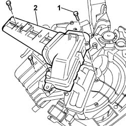
Applies to: all engines; all production periods
1. Undo the retaining bolt.
2. Remove the water supply and return pipes on the radiator.
3. Recover the seals on the pipes.
4. Recover the fixing nut.
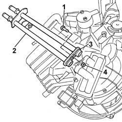
Applies to: all engines; all production periods
1. Release the clips on the air conditioner casing and remove the air conditioner radiator.
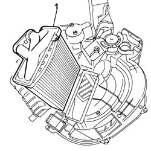
Applies to: all engines; all production periods
1. Undo the retaining bolt.
2. Release the clip.
3. Rotate in a clockwise direction and remove the ventilation/air intake and recirculation assembly.
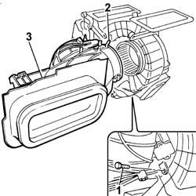
Applies to: all engines; all production periods
1. Undo the retaining bolts.
2. Remove the pollen filter access cover.
3. Remove the pollen filter.
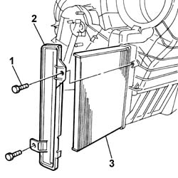
Applies to: all engines; all production periods
1. Undo the retaining bolts.
2. Remove the condensate tray.
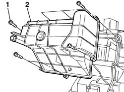
Applies to: all engines; all production periods
1. Remove the sensor on evaporator for air conditioner control unit.
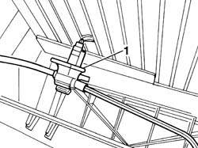
Applies to: all engines; all production periods
1. Undo the retaining bolts.
2. Separate the half shells (2a) and (2b).
3. Remove the condenser.
4. Remove the air mixer flap.
5. Disengage the fixing lugs and remove the air distribution flaps.
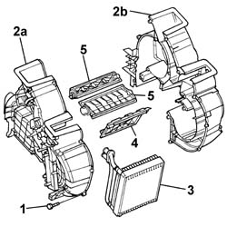
Applies to: all engines; all production periods
Refitting
RemovingCheck the condition of the condenser seal and if necessary replace it.
Fit the expansion valve on the condenser and tighten the fixing bolts.
Fit the condenser complete with expansion valve in its seating on the half shell.
Fit the air distribution flaps and check that they are secure.
Fit the air mixer flap in the half shells.
Tighten the bolts securing the half shells.
Fit the sensor on the evaporator for air conditioner control unit.
Fit the condensate tray and tighten its fixing bolts.
Check the condition of the pollen filter and if necessary replace it.
Fit the pollen filter in its seating.
Fit the pollen filter access cover and tighten the fixing bolts.
Fit the ventilation / air intake and recirculation assembly, rotate it in an anti-clockwise direction and check that it is secure.
Tighten the retaining bolt.
Check the condition of the radiator seal and if necessary replace it.
Fit the radiator and check that it is secure.
Check the condition of the seals on the water supply and return pipes and if necessary replace them.
Fit the water supply and return pipes on the radiator.
Fit the nut in its seating on the radiator.
Tighten the retaining bolt.
Fit the pipe shield and tighten the fixing bolts.
Check the condition of the soundproofing trim and if necessary replace it.
Fit the sound-proofing trim.
Fit the air conditioner fan motor, rotate it in an anti-clockwise direction and check that it is secure.
Tighten the retaining bolt.
1. Fit the distribution control sprocket (1a), lining up the notches (1b) and (1c) with the references on the distribution flap sprockets (1d) and (1e).
2. Tighten the retaining bolt.
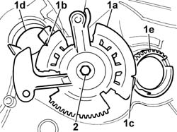
Applies to: all engines; all production periods
Fit the upper mixed air sensor.
Fit the lower mixed air sensor.
1. Fit the air conditioner air distribution flap motor, checking that the references on the motor sprocket (1a) and distribution flaps control sprocket (1b) are positioned correctly.
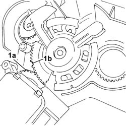
Applies to: all engines; all production periods
Tighten the fixing bolts.
Fit the air mixer air flap control motor and tighten the fixing bolts.
Fit the air intake and recirculation flap control motor and tighten the fixing bolts.